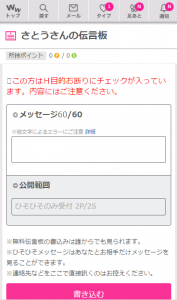
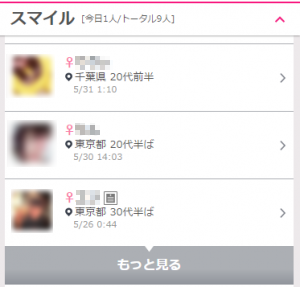
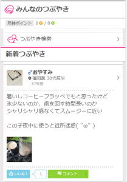
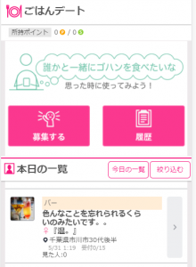
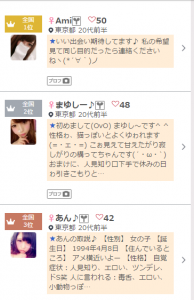

ワクワクメール

総合評価
★
★
★
★★
★
3.96
オススメポイント
- check_circle若い世代に大人気
- check_circle出会い系業界の価格破壊！コスパ最強
- check_circleSNS感覚で気軽に使える
- check_circle真面目な恋愛でのカップル成立多数
- check_circle友達探しにも使えるソーシャルサイト
詳細概要
| 会員数 | 700万人 |
|---|---|
| ジャンル | 趣味友 大人の関係 |
| 年齢層 | 10代～40代 |
| 出会いやすさ | 初心者向け |
| 料金 | ポイント制 |
| 信頼性 | 総務省 電気通信事業者 届出番号 A-21-10852 インターネット異性紹介事業 届出・認定済み 認定番号 96090001000 |
キャンペーン情報
無料でやりとりできる伝言板

通常、女性とやり取りする際は有料ですが他のサイトとワクワクメールが大きく異なる点がこの無料の伝言板。
登録してからすぐには使用できませんが、２週間ほどで使えるようになるプレミアム機能。
他のユーザーからも閲覧できる無料の伝言と、二人だけしか見れないのひそひそメッセージがあります。（通常の個人チャットの半分以下のポイント消費で済む）
プロフ閲覧、スマイル、いいね無料
ワクワクメールがコスパがいいといわれる理由です。女の子を探すのにポイント消費がないので、納得いく相手をじっくり選ぶことができます。

つぶやき機能
Twitterのように全ユーザーとタイムラインを共有し、つぶやくことができます。

ごはんデート
ご飯の写真と一緒にコメントを投稿できる掲示板機能。おいしそうな写真であるほど女性からの反応があり、デートにも誘いやすいことが特徴。

タイプランキング
有名なタイプランキング。女性からタイプされれば、その数に応じて表彰される仕組み。
上位に入れば、女性からの足跡やメッセージが大量にくる。

口コミ
匿名さん 東京都 20 男性
会員数 3出会いやすさ 5コスパ 5コンテンツ 4エロさ 3
ワクワクメールを結構利用しています。 週に１回くらいで会っていて、一人当たり1000円くらいです。 写真を見たりするのにもポイントがかかりますが、50程度です。
匿名さん 北海道 20 男性
会員数 4出会いやすさ 5コスパ 5コンテンツ 4エロさ 3
ワクワクメールは一般女性が非常に多いです サイト運営者がサクラを雇ってはいません。 ですが、そういう優良サイトにも他のサイトへ誘導する 引き抜き業者やデリバリー業者なんかがいます。
匿名さん 京都府 20 男性
会員数 3出会いやすさ 5コスパ 5コンテンツ 4エロさ 2
コツとしては、プロフィール欄を充実させると、 相手から連絡が来ることも。むこうからポイントを消費せずに会えるので おすすめのやり方です。
ayaさん 千葉県 20 女性
会員数 3出会いやすさ 5コスパ 4コンテンツ 3エロさ 1
友達がパパ活で使ってたからノリで登録してみた。 いい男いないなーって思ってたけど、タイプの塩顔イケメンがいて最近会って来た。 会ったら、写メ通りのイケメン。てか、むしろ写メよりイケメンだった。 まあ、その日やっちゃうよねw 一回で関係は終わっちゃたけど、タイプだったしいいかなー。 でも、そろそろ真面目に恋愛しなきゃだ
ayaさん 埼玉県 20 男性
会員数 4出会いやすさ 5コスパ 5コンテンツ 5エロさ 3
無料で書き込める伝言板使えばタダでライン聞けますよ。 俺の場合、気になった女の子に足跡 or スマイルつけまくって反応あった子に伝言板でアプローチする。 ワクワクはプロフ見るのもタダなんで、これやれば無料でも女と絡めます。 でも、たまに伝言板見ないとか抜かしてる女いるんでこういうやつにはメッセージしてます。 参考にしてみてください。
ホモ疑惑さん 大阪府 20 男性
会員数 3出会いやすさ 1コスパ 2コンテンツ 4エロさ 3
めちゃ可愛いギャルがいると思ってプロフ見たら、まさかのニューハーフ。 この時点でこのサイトくそかよって思ったけど、さらに最悪なのはその後。 実際にあったら、マジで男かよってくらいの美形ニューハーフが来て歌舞伎町の招き猫ってカラオケに行った。 口で抜いてもらったけど、くそ気持ちよくて二発くらい抜かれた。
わんぱくさん 滋賀県 30 男性
会員数 1出会いやすさ 2コスパ 1コンテンツ 2エロさ 1
最近業者増えたよーな気がする。YYCとかに比べりゃそら出会えるけど、いっときのワクワクからしたら出会いにくくなってる。 ほっといてもタイプめっちゃ来るようになったし。 タイプランキング、今上位の女とかあれみんな業者やろ。 早く元に戻ってください。
しんやさん 茨城県 20 男性
会員数 3出会いやすさ 4コスパ 5コンテンツ 4エロさ 3
つぶやき機能っていうツイッターみたいな機能、あれ本当いい。 普通につぶやきたいことつぶやけるし、意外と面白いこと書けば女の子からコメントくる。 ツイッターより素人の女の子とネットで堂々とやり取りしやすいから、そこから個チャに発展とかもするし。 女の子のつぶやきとか見れば、素人か判断つくし、会話のネタ探しにもなるからお勧め。
すけべ太郎さん 東京都 20 男性
会員数 4出会いやすさ 5コスパ 4コンテンツ 3エロさ 5
この前のGWに、予定空いてるという巨乳の熟女とワクワクで知り合ってラインを教えた。 あんまり、美人ではなかったけどあの熟れた感じと巨乳なところがエロくてついつい会ってエッチまでしてしまった。 賢者タイムが結構辛かったけど、もう一回あのGカップみるとボッキしてしまって二回戦ほどやってしまいました。 ワクワクには意外と簡単にやれる熟女がいる。
konomiさん 東京都 10 男性
会員数 3出会いやすさ 1コスパ 1コンテンツ 1エロさ 1
いきなり、３万円出すから車でしてほしいとか言われた。 するわけないでしょw てか絶対、お店行った方が安くすむと思うんだけど男性心理がわからない…w
えりさん 愛知県 30 女性
会員数 0出会いやすさ 4コスパ 2コンテンツ 2エロさ 1
結構真剣にいいなって思ってた人に会ってその日にホテルに誘われてしちゃった。 こういうの無理だと思ってたのに好きだから我慢してさせてあげらたら、ラインブロックされてた。 なんなの、ほんと。もう最悪。
まこさん 京都府 20 女性
会員数 4出会いやすさ 4コスパ 4コンテンツ 4エロさ 2
友達とパパ活したくて登録したー！ ４０くらいのおじさんとご飯行くだけで１万くらいもらえるからやりたい子はおすすめかも。 やらせてうるさいけど、いっつもシカトしてるw たまにイケメンとか気合う人いたら会ったりしてる！暇つぶしにはなるよー
sanatyanさん 東京都 10 女性
会員数 4出会いやすさ 5コスパ 4コンテンツ 4エロさ 4
大学でこっちきて、友達作りに登録しました。 それで出会った人と付き合って、しちゃったんだけど後から既婚者って言われてショック受けました。 その人とは今でにたまにセフレみたいな感じで半年に一回くらいのペースで会ってます。
ddさん 東京都 20 男性
会員数 4出会いやすさ 5コスパ 5コンテンツ 5エロさ 3
ワクワクメールでは、他の出会い系にはないバスト検索ができます。 Gカップで検索して、顔写メ載せてない女と出会ってきました。 普通なら顔写メ載ってない女は送らないんですけど、Gカップならいいかと思って。笑 実際会ったらくそスタイルいい女が来てその日にワンナイトしました。なかなか穴場みたいで使えます。
マッチョさん 東京都 30 男性
会員数 4出会いやすさ 4コスパ 5コンテンツ 4エロさ 3
ワクワクで知り合った女と渋谷でアポってきた。 エステやってる女だけ会って肌とか綺麗だったし、写メよりかわいくてびっくりした。 道玄坂登ったとこのいつもの居酒屋に連れ込んで、酔わせてホテルに連行。電マと手マンで思っ切り潮吹かせてタクシー代まで払わせたったw
pkさん 東京都 20 男性
会員数 5出会いやすさ 5コスパ 5コンテンツ 3エロさ 4
色んなサイト使ってますがこことpcmaxは女の子から食いついてくるほど積極的w 出会いやすさじゃナンバーワンだと思う バストの大きさでプロフ検索もできるから巨乳好きはまじでおすすめ
まさおさん 山梨県 20 男性
会員数 5出会いやすさ 5コスパ 5コンテンツ 4エロさ 4
写真検索からのスマイルして無料伝言板に書き込むのが鉄板の流れ。実際この流れでかかるポイントはまさかの0。まじでコスパ最強のサイト。
k-すけさん 東京都 20 男性
会員数 5出会いやすさ 5コスパ 5コンテンツ 5エロさ 5
今までで一番素人が多いし、出会えた！サイト自体はエロい雰囲気とかなくて、Twitterみたいだけどエッチ目的の女とかは普通にいるから結果えろいっていうね笑。まじでオススメできるサイト！使って損はなし。
ドンキーさん 愛知県 40 男性
会員数 5出会いやすさ 5コスパ 5コンテンツ 5エロさ 5
長らく下の方のひまを持て余しておりましたが、最近なんだか妙にムラムラしてきたので始めました。若干私には若すぎた気もしますが、社会人の小金持ちというのは女子大生ウケが良くとんとん拍子でご飯にいき、お持ち帰りしました。
ナイキオタさん 兵庫県 20 男性
会員数 5出会いやすさ 5コスパ 5コンテンツ 5エロさ 3
セフレになってとか直球すぎるエロはNG。当たり前だけど気持ち悪いだけでモテません。リアルでもネットでも同じ。建前上暇つぶしで使ってる女の子が多いのでエロを引き出せるよう気長いやりとりが必須。
バイさん 東京都 20 男性
会員数 5出会いやすさ 5コスパ 5コンテンツ 5エロさ 4
私はバイなんで、男と女両方いけますけどどっちとも会いましたよ。たまにニューハーフとかもいるんで、そういう気分の時はニューハーフを責めたりしてます。
なっちゃんさん 青森県 20 女性
会員数 5出会いやすさ 5コスパ 5コンテンツ 5エロさ 5
八戸に一人暮らししてた保育士です。 職場に出会いが全くなく、帰っていつも寂しい思いをしていたのでこのサイトで彼氏が見つかって本当に嬉しいです。今日で一年記念日なので二人でご飯にいってきます?そんなにエロくはないですが感謝の気持ちをこめて?
新田さん 東京都 20 男性
会員数 4出会いやすさ 5コスパ 5コンテンツ 4エロさ 3
このサイトはコスパよくていいです。 最初はお金をどぶに捨てる覚悟でしたけど、使ってみてようやくよさがわかりました！笑 こんだけコスパよく出会えてやれるならアリ
ヤマモトさん 東京都 20 男性
会員数 5出会いやすさ 4コスパ 5コンテンツ 4エロさ 5
イククルとJメールとワクワク登録してますが、最近一番使ってます。 なんと言っても一番良いのが伝言板をSNS風に使えちゃうこと。 普通のSNSと違って女の子もエロい子が多いのでマジで無料でセフレ量産できますよ。
夢見る男さん 東京都 30 男性
会員数 5出会いやすさ 5コスパ 5コンテンツ 4エロさ 5
最近パパ活女子？ってやつが増えた気がする けどその分可愛い子がめちゃくちゃ多い！！ いい時代になったなあ パパ活女子だろうが普通の女子だろうが根気よくアタックすれば必ず出会えます
kokiさん 東京都 20 男性
会員数 4出会いやすさ 4コスパ 5コンテンツ 4エロさ 3
大学で彼女ができなかったので、なんとかしたくて始めました。たまたま住みが近い女の子と仲良くなれたのでノリでそのまま遊んでワンナイトしました。ただ、どうしても彼女にしたかったのでそのあと告白してOKもらいました！バレンタイン安泰でよかった…
ぽめさん 神奈川県 20 女性
会員数 5出会いやすさ 5コスパ 5コンテンツ 5エロさ 5
最近夏が終わって人肌恋しくなってきます。。そういう時にワクワクメールでやり取りできる相手がいると安心します。気が合えば会うのも全然アリですね！